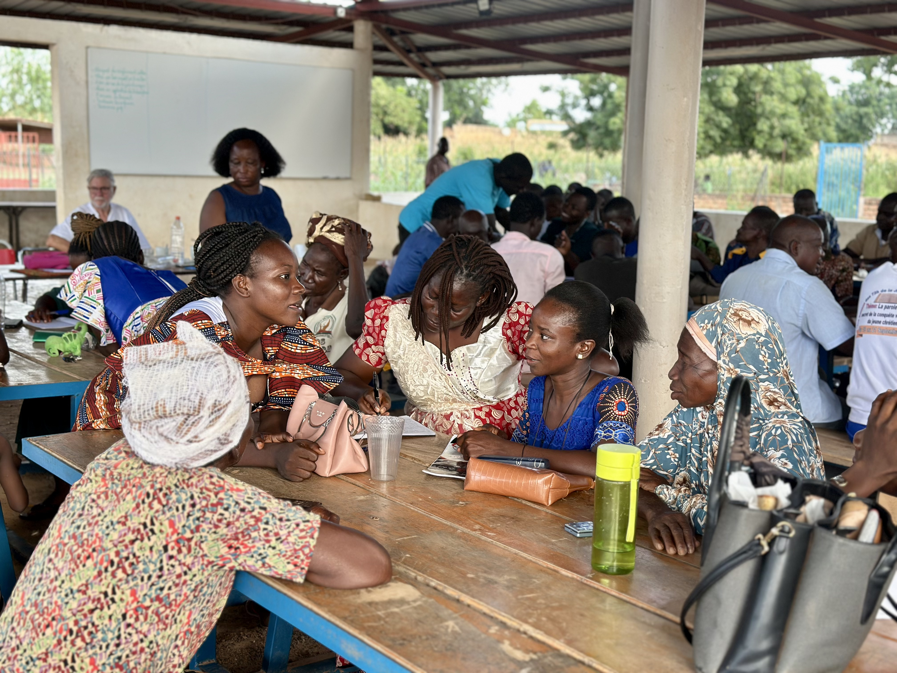

Varför medborgarkunskap är en del av Yennengas uppdrag
Yennenga Progress beskriver sig som en produktutvecklingshub för en mikrokommun, dvs en organisation som arbetar med allt det en fungerande lokal struktur bör erbjuda sina invånare. Det handlar inte bara om skola och hälsa, infrastruktur och jordbruk. Det handlar också om att människor förstår sitt samhälle, känner till sina rättigheter och sin egen roll i detta, samt har förmåga att delta i och påverka sin omgivning.
I Burkina Faso, där det demokratiska politiska skiktet till stor del har försvunnit och nya strukturer tar form, är behovet av just denna typ av kunskap mer akut än på länge. Yennenga Progress svarade på det behovet under 2025 med ett strukturerat program av utbildningar och seminarier med stöd från organisationen Jochnick Foundation och i samarbete med det lokala rättsinstitutet Cabinet Confort 2C2O.
Fem utbildningar, fem seminarier – 596 deltagare
Programmet bestod av två delar. De fem heldagsutbildningarna riktade sig till specifika yrkesgrupper, med 40–50 deltagare per tillfälle. De fem öppna eftermiddagsseminarierna välkomnade alla och lockade mellan 100 och 175 deltagare vardera. Det stora deltagandet vittnar om ett genuint behov av sammanhang och förståelse i en tid av snabb förändring.
Ämnena valdes ut med utgångspunkt i den aktuella situationen i landet: sjukvårdssystemet och utbildningssystemet, hur rättsväsendet är uppbyggt och fungerar, medborgerliga rättigheter och skyldigheter i en demokrati, korruption, och den stora och känsliga frågan om markägande. Lokala experter inom varje område höll i grundläggande genomgångar som följdes av livliga debatter med deltagarna.

Barns rättigheter ett eget spår
Parallellt med de vuxeninriktade utbildningarna löpte ett särskilt program för barns rättigheter genom hela året riktat till elever vid grundskolan och högstadiet. Förändring kan inte åstadkommas under enskilda temadagar eller inspirationsföreläsningar. Strukturerat och konsekvent arbete med värderingar, (själv)ledarskap, relationer och konflikthantering ger resultat i mental förflyttning som är nödvändig för att bygga förtroende och styrka.
Ett konkret och omtyckt inslag var när elever deltog i skörden av bönor på farmen – ett praktiskt exempel på solidaritet och samarbete över generationsgränser, som också kopplade samman klassrummets innehåll med vardagslivet.
Resultat och nästa steg
Utbildningsprogrammet 2025 visar att Nakamtenga inte bara är en plats för skola, det är ett samhälle som aktivt investerar i sin egen förmåga att förstå, navigera och påverka den värld det lever i. Det är en distinkt del av Yennenga Progress modell: att demokratisk motståndskraft byggs nerifrån, i mötet mellan kunskap och vardag.
Inför 2026 planeras fortsatta insatser inom ramen för det strategiska arbetet med medborgarlighet och lokalt ledarskap. Målet är att fler invånare, och särskilt fler kvinnor och unga, ska ha verktyg att delta aktivt i de strukturer som formar deras liv.